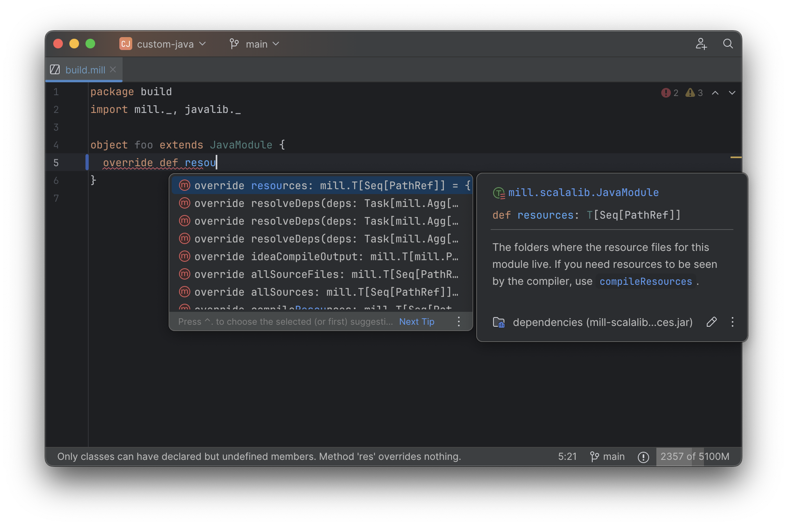

Mill Build Tool v1.0.0 Release Highlights
Li Haoyi, 10 July 2025
Mill is a build tool for Java, Scala, and Kotlin that aims to improve upon existing build tools in areas like performance, extensibility, and IDE support. The new release of Mill 1.0.0 is a major breaking version of the Mill project focused on setting a solid technical foundation that can provide stability for the coming years of development. While the Changelog contains a thorough listing of the various changes, as well as detailed migration instructions, this article instead spends more time discussing some of the highlights of the Mill 1.0.0 release.
Feature Highlights
Graal Native Launchers by Default
Mill 1.0.0 defaults to using a Graal-Native Image
launchers by default. This shaves significant overhead off of Mill command line invocations,
meaning running ./mill commands in the terminal can often complete in as little as 100ms:
$ time ./mill foo.compile
[35/35] foo.compile
[35] [info] compiling 1 Java source...
[35] [info] done compiling
./mill foo.compile 0.01s user 0.01s system 20% cpu 0.109 totalSlow startups and long warmup times have always been a pain point working in the JVM ecosystem, and this has always applied to JVM command-line tooling as well. Mill had previously used a long-lived background daemons to try and mitigate the problem, but even if the heavyweight background daemon is long-lived, the lightweight launcher/client process still adds a substantial overhead. With Mill’s Graal Native Image launcher, Mill’s command-line experience feels as snappy as any native binary, because it is one!
Apart from being a Graal Native Image itself, Mill also can be used to build your own Java, Scala, and Kotlin apps into native images. See Building Native Image Binaries with Graal VM for more details.
JVM-free Installation and Bootstrapping
One consequence of using a Graal native launcher is that Mill’s launcher no longer needs a JVM pre-installed in order to run. The launcher binary is self-contained, and is able to download and cache any JVM it needs in order to start itself or other Java processes.
$ echo temurin:23 > .mill-jvm-version
$ ./mill foo.test
https://github.com/adoptium/temurin23-binaries/releases/download/jdk-23.0.2%2B7/OpenJDK23U-jdk_aarch64_mac_hotspot_23.0.2_7.tar.gz
100.0% [##########] 197.6 MiB (11.1 MiB / s)
[build.mill-60/65] compile
[build.mill-60] [info] compiling 3 Scala sources to /Users/lihaoyi/test/mill-dist-1.0.0-RC2-68-43069c-example-javalib-basic-1-simple/out/mill-build/compile.dest/classes ...
[build.mill-60] [info] done compiling
[81/95] foo.compile
[81] [info] compiling 1 Java source...This means that Mill is able to manage your JVM installations completely on your behalf, without you needing to first install a JVM ahead of time, external tools like JEnv or SDKMan, or package managers like Homebrew. Mill can manage the JVM necessary for Mill itself to run, any JVM necessary for your project modules to run, as well as any third-party libraries used in both scenarios.
With this change, Mill becomes one of the few CLI tools that is truly zero-install: by using
Mill’s bootstrap script
(an idea borrowed from Gradle’s ./gradlew and Maven’s ./mvnw) you can run ./mill on any
clean Mac, Linux, or Windows or development machine or CI worker and have it bootstrap everything
necessary with zero installation up front. That’s pretty unique among the wide variety
of CLI tools out there, and should hopefully make it convenient for Mill users to build their
JVM projects on the wide variety of different environments out there in the wild.
See the docs for configuring mill-jvm-version for more details.
Bash/Zsh Tab-Completion
Mill 1.0.0 comes with built-in support for Bash and Zsh tab-completion. This can be installed via
$ ./mill mill.tabcomplete/install
Writing to /Users/lihaoyi/.cache/mill/download/mill-completion.sh
Writing to /Users/lihaoyi/.bash_profile
Writing to /Users/lihaoyi/.zshrcOnce set up, you can then use <TAB> to auto-complete Mill modules and tasks from the command-line:
$ ./mill f<TAB>
$ ./mill foo
$ ./mill foo.run<TAB>
foo.run foo.runClasspath foo.runMain foo.runMainLocal foo.runUseArgsFile
foo.runBackground foo.runLocal foo.runMainBackground foo.runMvnDeps
$ ./mill foo.runB<TAB>
$ ./mill foo.runBackgroundWhile this is not rocket science, we expect that this will be a significant quality-of-life
improvement to everyone using Mill. Nobody memorizes the names of every module and task within
a large project, and using ./mill resolve to try and list things or opening your IDE to rely
on in-code autocomplete can be tedious and annoying. Mill’s Bash/Zsh tab-completion relies on
the same underlying infrastructure that powers ./mill resolve and other existing functionality,
but integrates it nicely into your shell so you have a smooth experience exploring and interacting
with your build from the command line
Task Filesystem Sandbox Enforcement
Like Gradle, Mill build files contain arbitrary JVM code. And like Gradle, writing arbitrary
code means you have a chance to make a big mess of your Mill build files. For example,
although Mill relies on the assumption that tasks would only write to their destination
folder (available as Task.dest within any task body), and that module initialization
did not write to the filesystem, there was never enforcement of these expectations:
object foo extends Module {
def bannedWriteTask = Task {
os.write(BuildCtx.workspaceRoot / "banned-path", "hello") // bad!
}
os.write(moduleDir / "banned-write.txt", "hello") // bad!
}This meant it was possible to write code that violated Mill’s internal expectations, which could cause all sorts of things to go wrong: cache invalidation issues, race conditions, etc. So onboarding new developers to use Mill often resulted in a long process to teach them these conventions since the tool itself would not give any feedback until things loudly (or worse, silently!) misbehaved.
In Mill 1.0.0, most common filesystem read/write APIs have been instrumented to check that they are not misused. That means code that violates Mill’s conventions raises an immediate error:
$ ./mill foo.bannedWriteTask
error: ...Writing to banned-path not allowed during execution of `foo.bannedWriteTask`These sandboxes are not intended to be fully hermetic: there are escape hatches
(e.g. BuildCtx.withFilesystemCheckerDisabled{ … }), not all APIs are instrumented
(e.g. direct use of java.io./java.nio), and they are not intended to be a security
boundary against malicious code. Rather, they are meant to be simple guardrails to nudge
developers in the right direction to follow Mill’s conventions and coding style, so
that developers will naturally fall into configuring Mill the "right" way that leads
to the fewest surprises.
See the documentation for Mill Sandboxing for more details.
YAML Build Headers for Early Configuration
Mill now supports a build header comment syntax for "early" configuration that needs to be processed
before the main build.mill file is compiled and evaluated, and
contains configuration like the mill-version, mill-jvm-version, the build.mill file’s mvnDeps
(separate from your application code’s mvnDeps!) in a single //|-prefixed comment block.
This is reminiscent of Jekyll FrontMatter or Python’s
PEP723 Inline script metadata:
build.mill
//| mill-version: 1.0.0
//| mill-jvm-version: 17
//| repositories: [$PWD_URI/custom-repo]
//| mvnDeps:
//| - com.grack:nanojson:1.8-custom-test
//| - com.lihaoyi::scalatags:0.12.0
package build
...Previously, Mill had a wide variety of ways these things were configured:
-
A
.mill-versionfile to configure your Mill version -
A
.mill-jvm-versionfile to configure the JVM used to run the Mill process -
.config/mill-versionand.config/mill-jvm-versionflavors of these config files -
import $ivyfor configuring dependencies for yourbuild.mill -
import $repofor configuring maven repositories used to resolve dependencies for compiling yourbuild.mill
These are all configuration values that need to be used early on in the Mill
bootstrapping process, and thus we couldn’t rely on them being configured in the "main"
build.mill config-as-code. For example, before even compiling your build.mill, Mill
already needs to know what version of Mill you want to use and what JVM to run it on!
With Mill’s YAML build headers, we can consolidate this zoo of different configuration
styles into a single compact block at the top of every build.mill. While the older
configuration styles continue to be supported for migration-compatibility, using
Mill’s build headers is the recommended approach for configuring these values going forward.
Lastly, build headers are expected to future-proof this "early" configuration and allow all sorts of interesting use cases in future. For example, we can extend this format to support running self-contained Java/Scala/Kotlin scripts that contain both their dependency configuration and code, similar to uv scripts in Python.
See the docs for configuring Build Header Config for more details.
Mill Support for Kotlin Builds is now Stable
Mill 1.0.0 includes substantial improvements for building Kotlin projects with Mill:
These PRs really flesh out the previously-experimental support for Kotlin projects in Mill: main class discovery, compiler plugins, BuildInfo support, etc.. Other PRs upstream in the Coursier add support for resolving Kotlin Multiplatform dependencies, supporting Kotlin-JS and Kotlin-Android projects.
With 1.0.0, Kotlin support in Mill is no longer experimental, and we are enabling
binary-compatibility enforcement for mill.kotlinlib just as we already have for
mill.javalib and mill.scalalib. We hope that you will try out Mill in your Kotlin
projects, and let us know how it goes in Mill’s Github Discussions.
See the docs for Building Kotlin with Mill for more details
Mill Support for Android Builds
A huge amount of work went into 1.0.0 improving Mill’s support for Android builds. Android apps have traditionally only been buildable using Gradle, and Mill is one of the only other build tools that you can use as an alternative. While in 0.12.x Android support was a demo-quality integration, in 1.0.0 it has been fleshed out into a robust and complete framework that can build many of the sample apps available in the Android ecosystem.
For example, Mill is now able to build, run, and test the JetLagged Android Example App:
As well as the San Angeles NDK example:
This work was done by the folks VasLabs, who put in an immense amount of work:
Updating the Mill Android documentation is a work in progress. We will be fleshing out the Mill Android docs over the following weeks and months and writing up blog posts on our experience integrating Mill with the Android toolchain But if you are unsatisfied with Gradle and interested in trying out an alternate Android build tool, you should definitely take a look and try it out and let us know how it goes in Mill’s Github Discussions.
See Mill’s docs for Android Java Projects or Android Kotlin Projects for more details.
Quality Highlights
IDE Support
Mill has always had a best-in-class IDE experience in IntelliJ and VSCode that surpasses the experience you get with Maven, Gradle, or SBT. For example, in Mill builds your IDE is able to autocomplete, pull up docs, or otherwise navigate around your build graph as easily as you can any application codebase in Java, Scala, or Kotlin:

But even so, there was a ton of room for improvement. Many PRs went into improving Mill’s IDE support with IntelliJ and VSCode, which goes through the "BSP" build-server-protocol:
There were also some fixes on the IntelliJ side of the build-tool-integration:
And on the VSCode side of things:
As Mill builds is able to leverage the existing IntelliJ/VSCode IDE infrastructure, we did not need to implement support for the Mill build tool from scratch in its own plugin. But nevertheless there is still a lot of work to properly wire up Mill to talk to these IDEs and pass the necessary data so the IDEs can do their thing.
Improving IDE support is a grind: lots of fiddling with undocumented APIs and undocumented behavior, with bugs randomly scattered across organizational boundaries (some in Mill, some in IntelliJ, some in VSCode). But hopefully this work will provide a smoother experience for anyone getting using Mill, and improve upon Mill’s ability to provide a best-in-class IDE experience for your build system.
Classpath Cleanup and Stabilization
Mill 1.0.0 runs your build logic with a much more minimal JVM classpath than earlier versions. We expect that this will provide faster downloads, speedup compiles, and also allow better long-term backwards compatibility as the Mill project itself and user’s Mill builds both evolve over time.
-
Mill 0.12.x compiled and ran your
build.millwith the entire Mill assembly jar on the classpath. That meant that yourbuild.millcould access all of Mill’s internal code and dependencies, and versions of dependencies used by Mill are pinned and unchangeable (e.g. see #2985) -
Mill 1.0.0 compiles and runs your
build.millwith only the code and dependencies that it actually requires on the classpath, with the rest of Mill’s internal code and internal dependencies isolated via subprocess or classloader isolation, with interop happening through a narrow interface
While this may seem like an esoteric change, concretely it means two things:
-
You are now much free-er to use or upgrade third-party dependencies in your
build.millvia//| mvnDeps: they will not conflict with Mill’s internal dependencies, and are not pinned to the versions that Mill uses. This is important because extending Mill with third-party libraries is a core part of its unique value proposition. -
Mill can evolve much more freely without worrying about breaking user code. All of Mill’s internal code is now completely hidden from the user, so users don’t need to worry about accidentally depending on some internal class or static method that may change and cause breakage when they upgrade.
Clean classpaths aren’t a "feature" in the common sense of the word, but regardless we hope that this classpath cleanup will pay dividends over time.
Try out Mill 1.0.0!
This blog post covers just the highlights of the new Mill 1.0.0 release; the full changelog goes into a lot more breadth and depth about the changes, and what migration steps are necessary for upgrading from earlier versions of Mill:
If you would like to try Mill 1.0.0 for the first time, check out the links below:
-
Building Java with Mill, for starting a greenfield Mill project with Java
-
Building Scala with Mill, for starting a greenfield Mill project with Scala
-
Building Kotlin with Mill, for trying out the newly-stable Kotlin support in Mill
-
Migrating to Mill, for migrating an existing project from to Mill from Maven, Gradle or SBT
-
Android Java Projects, for trying out the experimental Android support in Mill
If you are curious about the motivation behind the Mill project, see: